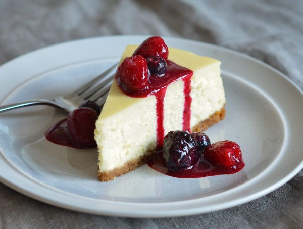

New York Cheesecake

Description
Cheesecake is a sweet dessert consisting of one or more layers. The main, and thickest, layer consists of a mixture of a soft, fresh cheese, eggs, and sugar. If there is a bottom layer, it most often consists of a crust or base made from crushed cookies, graham crackers, pastry, or sometimes sponge cake. Cheesecake may be baked or unbaked and is usually refrigerated.
New York-style cheesecake uses a cream cheese base, also incorporating heavy cream or sour cream. The typical New York cheesecake is rich and has a dense, smooth, and creamy consistency
Ingredients
- 15 graham crackers, crushed
- 2 tablespoons butter, melted
- 4 (8 ounce) packages cream cheese
- 1 ½ cups white sugar
- ¾ cup milk
- 4 eggs
- 1 cup sour cream
- 1 tablespoon vanilla extract
- ¼ cup all-purpose flour
Steps
- Preheat oven to 350 degrees F (175 degrees C). Grease a 9 inch springform pan.
- In a medium bowl, mix graham cracker crumbs with melted butter. Press onto bottom of springform pan.
- In a large bowl, mix cream cheese with sugar until smooth. Blend in milk, and then mix in the eggs one at a time, mixing just enough to incorporate. Mix in sour cream, vanilla and flour until smooth. Pour filling into prepared crust.
- Bake in preheated oven for 1 hour. Turn the oven off, and let cake cool in oven with the door closed for 5 to 6 hours; this prevents cracking. Chill in refrigerator until serving.
Recipe is from Taliesen found here.
Back to Title